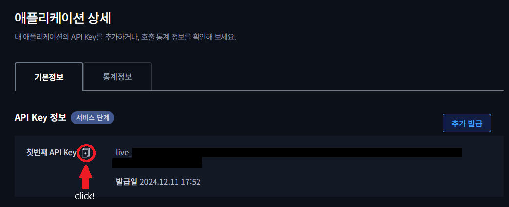

!!!발급받은 API 키가 타인에게 노출되지 않도록 주의해주세요!!!
상단메뉴 → 애플리케이션 → 애플리케이션 등록
- 게임 선택 : 메이플스토리
- 단계 선택 : 서비스 단계
- 출시할 서비스명 : 원하는 구별가능한 이름 아무거나
- 개발환경 선택 : WEB
- URL : 네이버, 넥슨 등 아무 링크나 넣으셔도 무방합니다.(ex. https://in-fo.github.io/MapleStoryGuildManagement/)
- 상단메뉴 → 애플리케이션 목록 → "설정한 서비스명" 클릭
- 문서 +아이콘을 눌러 복사하고 붙여넣으면 끝.
